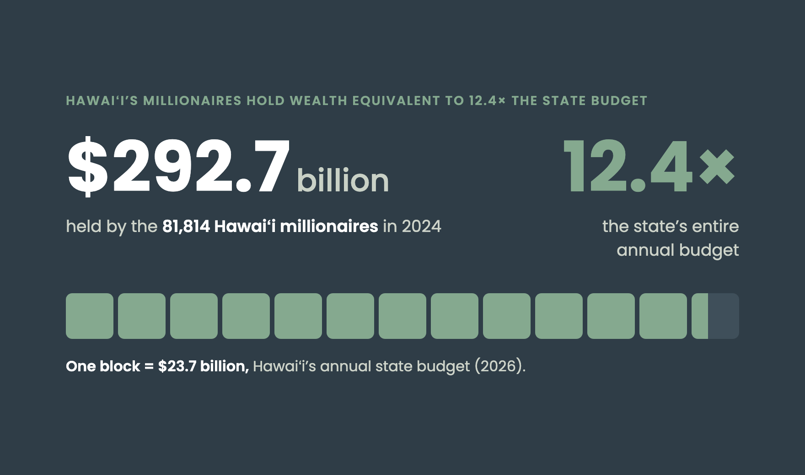
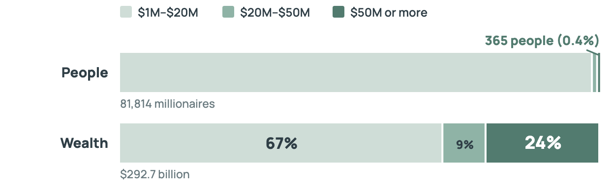
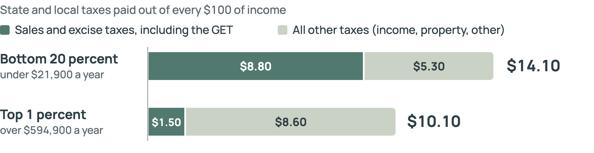
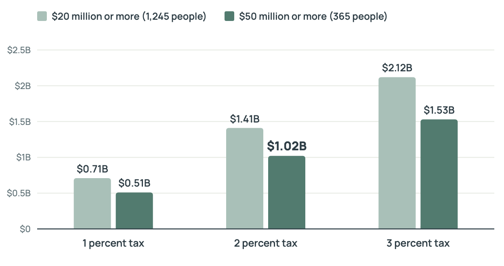

Wealth Tax Report
A tax on the wealthiest millionaires
NOVEMBER 2026
www.hiappleseed.org
Author: Devin Thomas
Hawaiʻi Appleseed is committed to a more socially and economically just Hawaiʻi, where everyone has genuine opportunities to achieve economic security and fulfill their potential. We change systems to address inequity and foster greater opportunity by conducting data analysis and research to address income inequality, educating policymakers and the public, engaging in collaborative problem solving and coalition building, and advocating for policy and systems change.
The work of Hawaiʻi Appleseed is about people. The issues we work on—housing, food, wages, mobility, the state budget and taxation, and racial and indigenous equity—are important because they ensure people have access to shelter, sustenance, and the means to survive and thrive individually and collectively.
TABLE OF CONTENTS
Introduction — 3
Who is really struggling? — 4
History of wealth taxes — 7
Solution: A tax on the wealthiest millionaires — 8
Conclusion — 10
Endnotes — 11
Copyright © 2026 Hawaiʻi Appleseed Center for Law & Economic Justice. All rights reserved.
733 Bishop Street, Suite 1180, Honolulu, HI 96813
2 · WEALTH TAX REPORT
Introduction
THE STATE OF HAWAIʻI has an economy that works well for the wealthy few, yet leaves low- and middle-income households behind. Across the state, there are 1,245 individuals who hold at least $20 million in wealth.1 Altogether, this small group holds over $95.6 billion in real estate, stocks, and other highly profitable investments. Since Hawaiʻi does not tax the net worth of individuals, these ultra-wealthy residents continue to build on their fortunes while paying little in taxes. In order for Hawaiʻi to keep funding programs and services for working families, we must raise taxes on the ultra-wealthy—who are not struggling by any stretch of the imagination.
A 2 PERCENT TAX ON THE WEALTH ABOVE $50 MILLION HELD BY THE ULTRA‑WEALTHY WOULD RAISE ROUGHLY $1 BILLION A YEAR.
3 · WEALTH TAX REPORT
BY THE NUMBERS
1,245
individuals in Hawaiʻi hold at least $20 million in wealth
$95.6B
held altogether by that small group
$1.02B
estimated a year from a 2 percent tax on wealth above $50 million
4 · WEALTH TAX REPORT
Who is really struggling?
MUCH HAS BEEN SAID ABOUT HAWAIʻI’S HIGH COST OF LIVING, and it is true that many low- and middle-income residents can no longer afford to live here. About 44 percent of Hawaiʻi households live below the ALICE Threshold, which means they cannot consistently cover their basic living expenses. Many are working households—our family, friends, and neighbors.2
Figure 1. Wealth held by Hawaiʻi’s 81,814 millionaires, measured against the annual state budget (2024)

Sources: Altrata (Wealth-X) market-sizing data for Hawaiʻi (Nov. 9, 2025); State of Hawaiʻi annual operating budget, 2026 ($23.7 billion). Wealth is a total held and the budget is a yearly flow, so the comparison is one of scale. The full 2010–2024 series is on the Hawaiʻi Appleseed millionaire-report dashboard.
5 · WEALTH TAX REPORT
On the other hand, Hawaiʻi’s wealthier residents are faring better than ever. The number of millionaires living in Hawaiʻi has increased rapidly, especially after the pandemic. There are now 81,814 millionaires statewide—nearly triple the number in 2010—holding a combined $292.7 billion in wealth. Many of these households are millionaires mostly on paper, since a paid-off home in Hawaiʻi can be worth $1 million on its own, which is why the tax proposed in this report would apply only to wealth above $50 million.
For every $100 they earn, Hawaiʻi’s lowest-income households pay $14.10 in state and local taxes. In comparison, the top 1 percent pays only $10.10. The General Excise Tax (GET), drives that difference: since it applies to nearly every purchase, a family earning $30,000 and a household earning $250,000 pay the same tax rate on groceries.
Figure 2. Share of Hawaiʻi’s millionaires and of their wealth, by tier (2024)

Source: Hawaiʻi Appleseed analysis of Wealth-X/Altrata market-sizing data for Hawaiʻi (Nov. 9, 2025). Tiers are non-overlapping wealth bands covering all 81,814 millionaires in the data.
Figure 3. State and local taxes paid out of every $100 of income: bottom 20 percent versus top 1 percent of households (2024)

Source: Institute on Taxation and Economic Policy, “Hawaiʻi: Who Pays? 7th Edition,” 2024 (2024 tax law at 2023 income levels; senior taxpayers excluded). Households in the middle three-fifths pay about 13 to 14 percent.
6 · WEALTH TAX REPORT
In addition, Hawaiʻi’s tax code carves out generous breaks and exemptions for the wealthy. Capital gains are an excellent example: the state taxes the profits from selling assets (such as stocks, bonds, and real estate) at just 7.25 percent, compared to a (now) 13 percent top rate on income from regular work. About 77 percent of that capital gains income in Hawaiʻi goes to filers earning more than $400,000 a year, so the discount benefits people who are already wealthy.3 Taxing investment income at the same rate as a regular paycheck would generate an estimated $128 million for the state, without affecting working families.4
Hawaiʻi’s estate tax
The estate tax is assessed on the money, property, and investments left behind by an individual after their death—but only if they have assets worth more than $5.49 million.5 In that sense, the estate tax is aimed at the wealthy, since it applies only to the largest estates—though its $5.49 million threshold reaches households far below the $20 million and $50 million levels discussed in this report.
However, there are some key drawbacks to the estate tax. Unlike an annual wealth tax, the estate tax is only collected once, from whatever is left after decades of trusts, gifting, and estate planning designed to shrink it.
One of the loopholes wealthy families exploit is the grantor retained annuity trust (GRAT). The GRAT allows a family to transfer an asset’s future growth to their heirs without paying any gift or estate tax. A ProPublica investigation found that over half of America’s 100 richest people have used a GRAT or similar trust to shrink their taxable estate.6 Hawaiʻi’s own numbers show how little the estate tax collects: a 2 percent annual tax on wealth above $50 million would raise roughly $1.02 billion a year, about 18 times the $55.8 million that estate and gift taxes combined raised in fiscal year 2024—half of one percent of total state tax collections.7
If the state is committed to solving wealth inequality, it cannot let the estate tax sit on the books while a handful of families quietly structure their way around it. A 2 percent annual wealth tax would not replace the estate tax—it supplements it, taxing fortunes while they are still growing.
However, there have been attempts to pull back the estate tax. In 2024, the Legislature considered HB2653, which would have raised the exemption threshold for the estate tax.8
7 · WEALTH TAX REPORT
History of wealth taxes
ON PAPER, the United States is home to one of the most progressive tax systems in the world. The U.S. federal income tax follows the principle that the more income an individual or household earns, the more they pay in federal taxes. The same logic applies to the 26 states in the country—plus Washington, D.C.—that levy their own progressive tax regimes on residents who live in their respective jurisdictions. This progressive tax system grants both state and federal governments the ability to pull together the resources necessary to fund the basic functions and policy objectives of an administration.9
However, for more than 50 years, corporations and the wealthiest Americans have lobbied to wear down the progressivity of the U.S. tax system, and they have largely succeeded. The top marginal tax rate has fallen sharply, and progressivity tapers off at the very top of the wealth distribution. The ultra-wealthy manage to pay a lower effective tax rate than the average wage earner, and some miraculously avoid the income tax altogether, thereby exposing the hidden regressivity of the U.S. tax code.10
This is made possible by the fact that wealth is concentrated in the hands of a small minority. The rapid expansion in asset values in recent decades, and their continued appreciation, has allowed the ultra-wealthy to exploit the U.S. federal tax system to decrease their tax liabilities. The unearned income the ultra-wealthy receive from qualified dividends or long-term capital gains is taxed at a rate lower than ordinary earned income. Others avoid salaries and income taxes altogether by borrowing against the value of their assets. And when they eventually pass those assets to their heirs, the tax bill can disappear entirely: the cost basis resets to the asset’s value on the date of death, wiping out every dollar of gain that was built up over a lifetime. The Joint Committee on Taxation estimates this “stepped-up basis” rule alone will cost the federal government $72.5 billion in 2026.11
Hawaiʻi’s tax code tells a similar story. The income tax cuts in Act 46 were projected to cost about $1.45 billion a year by 2031.12 Lawmakers recovered part of that cost with Act 24, which created a new 13 percent income tax bracket for millionaires, reduced tax credits for businesses, and boosted income tax rates on the top four brackets. However, even after that rollback, the remaining tax cuts are still expected to drain over $1 billion a year from Hawaiʻi’s budget by 2031.13 A wealth tax could raise more revenue to offset this loss by directly taxing the assets of multi-millionaires.
8 · WEALTH TAX REPORT
Solution: A tax on the wealthiest millionaires
HAWAIʻI IS HOME TO MASSIVE AMOUNTS OF WEALTH, and the state should take measures to tax it appropriately. A 2 percent tax on the wealth above $50 million held by the ultra-wealthy would raise roughly $1 billion a year—roughly what the state is giving away with its recent tax cuts. In 2024, there were only 1,245 individuals in Hawaiʻi with $20 million or more in wealth.
A wealth tax works differently from an income tax. Income is the money a person takes in over the course of a year, such as wages, interest, dividends, and the profits from selling an asset. Wealth, or net worth, is the total value of everything a person owns—homes and land, stocks and bonds, ownership stakes in businesses—minus what they owe. Hawaiʻi taxes income and purchases, and the counties tax real property, but no level of government in Hawaiʻi taxes a person’s total net worth. In effect, a large stock portfolio or a stake in a private company can grow in value for decades without ever being taxed, as long as the owner does not sell it.
At the $20 million mark, we are no longer talking about “normal” millionaires. These individuals account for less than 0.1 percent of the state’s population, and they own far more than even the highest-paid doctors, lawyers, and other white-collar professionals could hope to earn in a lifetime. In other words, the doctor or lawyer is an earner, whose wealth comes mostly from a paycheck that is taxed every year, while those at the top are owners, whose fortunes sit in stocks, real estate, and businesses that can grow for decades without being taxed.
Table 1. Wealth held by Hawaiʻi’s wealthiest residents (2024)
| Hawaiʻi, 2024 | $20 million or more | $50 million or more |
|---|---|---|
| Individuals | 1,245 | 365 |
| Total wealth | $95.6 billion | $69.3 billion |
| Wealth above the threshold | $70.7 billion | $51.1 billion |
9 · WEALTH TAX REPORT
As shown above, significant revenue could be gained through taxing the ultra-wealthy at just 1 percent. By casting a wide net—on anyone worth over $20 million—the State could bring in upwards of $2 billion with a 3 percent tax rate.
This is not a fringe idea. In fact, California just put one to its voters. Proposition 40 would have imposed a one-time, 5 percent tax on the roughly 200 Californians with a net worth over $1 billion, raising an estimated $100 billion over five years, with 90 percent of the funds dedicated to health care. On November 3, 2026, voters rejected it, with early returns showing more than 55 percent opposed. The defeat followed a lopsided money fight: opponents and allied business interests raised $316.7 million, including $102 million from Google co-founder Sergey Brin, and outraised supporters roughly four to one. (The $316.7 million includes money for competing measures on the same ballot.)14 California’s measure failed, but it is part of a national push to make the wealthy pay their fair share. Other states are continuing to increase their income tax rates on the wealthy: Maine has adopted a millionaire surcharge on income and Washington now taxes capital gains.15
Figure 4. Estimated annual revenue from a wealth tax on wealth above $20 million or $50 million, by tax rate (2024)

Source: Institute for Policy Studies and Hawaiʻi Appleseed analysis of Wealth-X/Altrata market-sizing data for Hawaiʻi (Nov. 9, 2025). Each rate applies only to wealth above the threshold (see Table 1). Estimates are static: they do not allow for avoidance, valuation disputes, or residents leaving the state.
10 · WEALTH TAX REPORT
How the wealth tax would work
A wealth tax for Hawaiʻi would probably work in a similar way to California’s proposal. Residents above a certain threshold (e.g. $20 million) would report their net worth—the value of everything they own minus what they owe—and pay the corresponding tax to the state. If they do not have enough money immediately available to pay the wealth tax—most wealthy people have their wealth stashed away in investments—they would be required to liquidate their assets as needed to cover the amount.16
Conclusion
HAWAIʻI’S WEALTHIEST RESIDENTS HAVE PROSPERED while many working families have fallen behind. The wealth tax is a way to balance that scale—it would simply require those with the most to help fund the schools, healthcare, and housing that enable all of Hawaiʻi’s families to thrive. This is necessary if we want to build the kind of economy that works for everyone.
11 · WEALTH TAX REPORT